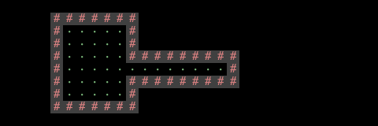
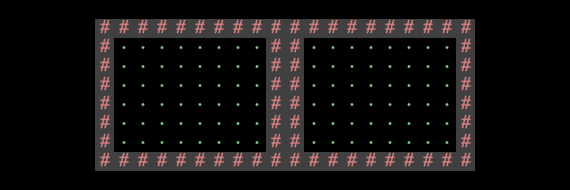
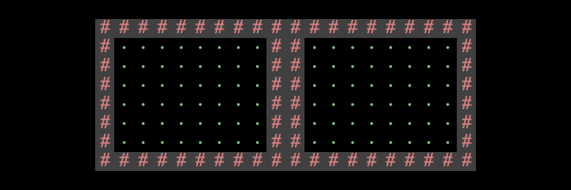

3A: World Generation
Deadlines
| Assignment | Tasks | Deliverable | Points | Due Date |
|---|---|---|---|---|
| Team Formation | - Task 0: Partnerships | Pre-Project Google Form | 2.5 | Wed, Apr 9 11:59pm PT |
| Project 3A | - Task 1: Setup - Task 2: Design Document - Task 3: World Generation |
World Screenshots on Gradescope | 10 | Fri, Apr 18 11:59pm PT |
| Design Document | 7.5 | |||
| Mid-Project Google Form | 2.5 | |||
| Project 3B | - Task 4: Main Menu - Task 5: Interactivity - Task 6: HUD - Task 7: Saving and Loading - Task 8: Ambition Features |
Code on Gradescope (0 pts, but required for checkoff) |
0 | Tue, Apr 29 11:59pm PT |
| Live Checkoff with TA (Checkoffs will happen 4/28 – 5/2) |
100 | |||
| Post-Project Google Form | 2.5 |
Code Overview
Lab 9
Before you start this project, we highly recommend that you complete at least the first 3 tasks in lab 9. These tasks will introduce you to:
- The Project 3 tile engine.
- The StdDraw library.
- Creating a simple user interface and a real time “game loop”.
- Saving and loading the state of a simulation (task 4).
Skeleton Code
A walkthrough of the new skeleton code is available here.
This is from a past semester, so some terms may be outdated (e.g. “Phase 1” is now “Project 3A” and the “AutograderBuddy” is now deprecated).
In the TileEngine package, you’ll find the following useful files:
TERenderer.javacontains rendering-related methods.TETile.javarepresents a tile.Tileset.javahas some pre-made tile designs that you can use.
In the Utils package, you’ll find the following useful file:
RandomUtils.javahas methods for generating randomness for your world.
In the Core package, you’ll write code for your game. We recommend putting all your code in this package (though this is not required).
Main.javais how your user starts the entire system.World.javarepresents your world!- You can add other classes of your own, too!
This project makes heavy use of StdDraw, which is a package that has basic graphics rendering capabilities. Additionally, it supports user interaction with keyboard and mouse clicks. You will likely need to consult the API specification for StdDraw at some points in the project. See here for the API specification.
Imports
Your project should only use standard Java libraries or any libraries we provided with your repo and library-sp25.
Here is a non-comprehensive list of allowed imports:
java.util.List,java.util.ArrayList,java.util.Collections,java.awt.*,java.io.*, or anything else starting withjava.is fine.javax.sound,javax.imageio,javax.swing.JOptionPane, or anything else starting withjavax.is fine.edu.princeton.cs.algs4.StdDraw,edu.princeton.cs.algs4.StdAudio, or anything else starting withedu.princeton.cs.algs4.is fine, because this is inlibrary-sp25.tileengine.TETile,utils.RandomUtils, or anything else starting withtileengine.orutils.is fine, because these are the starter code.
Conceptual Overview
Creating a Tile Array
At a high level, your goal is to create a 2D array of TETile objects, and fill in the array with different tiles, to create a nice-looking world. Then, you can call one of our library functions to display this world to the user.
Important notes on orientation:
world[0][0]corresponds to the bottom-left tile of the world.- The first coordinate is the x-coordinate. For example,
world[8][0]is 8 spaces to the right of the bottom-left tile. - The second coordinate is the y-coordinate. For example,
world[0][3]is 3 spaces above the bottom-left tile.

If you’re unsure of the tile layout, you should complete lab 9 in which you’ll write some short sample programs that draw sample grids to deepen your understanding. If you confuse x/y or up/down, you’re going to be incredibly confused when debugging.
Each entry of the 2D array can be filled in with a tile from our default library of tiles in Tileset.java.
Here’s a snippet of code that creates a world with width 5 and height 3, and fills in a few squares:
private static final int WIDTH = 5;
private static final int HEIGHT = 3;
// Create grid of tiles (all null to begin with).
TETile[][] world = new TETile[WIDTH][HEIGHT];
// Fill grid with NOTHING tiles.
for (int x = 0; x < WIDTH; x++) {
for (int y = 0; y < HEIGHT; y++) {
world[x][y] = Tileset.NOTHING;
}
}
// Add some tiles to the grid.
world[0][1] = Tileset.WALL; // The # sign.
world[3][0] = Tileset.FLOWER; // The pink flower.
world[2][2] = Tileset.MOUNTAIN; // The gray triangle.
The resulting world would look like this when it’s rendered:

Notice that we had to explicitly assign unused squares to Tileset.NOTHING, the pure black tile. If you don’t initialize unused squares, you’ll get a NullPointerException when you try to draw the world.
Rendering Tiles
Once you have your 2D world array, it’s time to show it to the user!
Here’s a snippet of code that takes in a 2D world array, and displays it to the user:
// Initialize the tile rendering engine with a window of size WIDTH x HEIGHT. Call this only once.
TERenderer ter = new TERenderer();
ter.initialize(WIDTH, HEIGHT);
// Create and fill grid of tiles (all null to begin with).
// Omitted: Code to fill the grid with tiles.
TETile[][] world = new TETile[WIDTH][HEIGHT];
...
// Draw the 2D grid to the screen. Call this every time you re-draw the world.
ter.renderFrame(world);
Note: Later in the project, you’ll be animating the game (displaying different worlds as the user moves around). Be sure to call initialize only once, to set up the window. Then, you can call render as many times as you want.
The rendering engine calls all the necessary StdDraw methods for you. We recommend against using StdDraw commands like setXScale or setYScale unless you really know what you’re doing, as you may considerably alter or damage the a e s t h e t i c of the system otherwise.
Pseudo-Randomness
To generate random numbers in Java, we can use create a Random object, which represents a random number generator:
Random r = new Random(); // Totally random. Don't do this in Project 3.
System.out.println(r.nextInt());
System.out.println(r.nextInt());
System.out.println(r.nextInt());
Every time you run this program, you’ll get 3 totally random integers.
What if we want to control the output of the random number generator (e.g. for debugging purposes)? In that case, we can provide a seed to the constructor:
Random r = new Random(1000); // Pseudorandom. Do this in Project 3.
System.out.println(r.nextInt());
System.out.println(r.nextInt());
System.out.println(r.nextInt());
r is now a pseudorandom number generator, because it generates a deterministic sequence of random-looking numbers based on the seed you provide.
If you provide the same seed, you will get the same sequence of values. For example, every time you run this program, you will get the same 3 integers.
Here’s another example:
Random r = new Random(82731);
System.out.println(r.nextInt());
r = new Random(82731);
System.out.println(r.nextInt());
This code snippet will always print out the same number twice. If you run this program multiple times, you’ll still get the same number twice.
In Project 3, you should always seed your Random objects, so that your worlds look random, but you can re-create them consistently for debugging and grading purposes. The RandomUtils class provides some useful methods for getting other types of randomness out of a Random object, examples include:
int uniform(Random random, int a, int b): Returns an integer from the range[a, b)T randomChoice(Random random, List<T> items): Returns a random item from items.void shuffle(Random random, Object[] a): Shuffles the given array.double gaussian(Random random, double mu, double sigma): Gives a sample from a Gaussian distribution.
Note: Most students won’t use any of the fancy stuff from RandomUtils.
World Requirements
Your goal in Project 3A is to write a world generator that can create pseudorandom worlds with hallways and floors.
Here are some examples of valid worlds, where # is wall, dot/quote is floor, and the empty square is the empty space (outside the world).


Valid
Requirements for a valid world:
-
The world must include distinct rooms and hallways. For any floor square, it should be obvious whether that square belongs to a room or a hallway.
It’s okay if you occasionally generate some worlds where a few squares are ambiguous, but the vast majority (>90%) of floor squares should be clearly identifiable as a room or a hallway.
Overlapping rooms are fine, as long as it’s clear that the squares belong to rooms, not hallways.
(click to expand) Examples of invalid worlds, because we can't tell where rooms and hallways are.


-
At least some rooms should be rectangular. You can optionally support rooms of other shapes as well.
-
Hallways should be width-1 or width-2. However, hallways must be visually distinct from rooms. The vast majority of students use width-1 hallways.
(click to expand) Examples of hallway widths.
Below is a width 1 hallway (most/all hallways should look like this):

Below is a width 2 hallway:

-
Your world generator must be capable of generating hallways that include turns (or equivalently, straight hallways that intersect). Random worlds should generate a turning hallway with high frequency, in that a majority of worlds should have a turning hallway.
-
The world should not have any dead-end hallways. Hallways should always lead into rooms.
(click to expand) Example of an invalid world, because it has a dead-end hallway.
 -
Walls, floors, and empty spaces should all be visually distinct.
The easiest way to do this is to use three different tile types: one for walls, one for floors, and one for empty spaces.
(click to expand) Example of an invalid world, because we can't distinguish between walls and floors.

-
Walls in the corners of rooms and hallways are optional.
(click to expand) As an example, all these rooms and hallways are valid.
As an example, the left room has walls in the corners, but the right room does not. Either one is fine. (Note: This world itself would be invalid because the two rooms are disconnected.)
 As an example, the top-left corner of this hallway has a wall tile, but the top-right corner of this hallway does not have a wall tile. Either one is fine. (Note: This world itself would be invalid because there are no rooms.)
As an example, the top-left corner of this hallway has a wall tile, but the top-right corner of this hallway does not have a wall tile. Either one is fine. (Note: This world itself would be invalid because there are no rooms.)
-
All floor tiles (rooms and hallways) should be reachable from each other. Note: As part of the ambition features you may end up with worlds that are only conditionally reachable, e.g. using teleporters, locked doors, destructable walls, etc.
In other words, it should be possible to trace a path of floor tiles between any pair of floor tiles.
-
All the space “inside” the walls should be floor tiles, and all the space “outside” the walls should be empty space tiles.
In other words, a floor tile should only be bordered by floor tiles or wall tiles.
-
Rooms cannot clip off the edge of the world. In other words, there should be no floor tiles on the edge of the world.
(click to expand) Example of an invalid world, because it clips off the world.

-
The world must not have excess unused space. There’s no strict requirement, but try to consistently fill at least 50% of the world with rooms and hallways.
(click to expand) Example of an invalid world, because there are too few rooms.

Pseudorandom
Requirements for a pseudorandom world:
-
The world must be pseudorandom.
If the user chooses the same seed twice, the resulting world must be identical.
If the user chooses two different seeds, the resulting worlds should be different.
-
Different worlds should different numbers of rooms and hallways.
It’s okay if your numbers always fall in a fixed range. For example, it’s okay if all worlds have between 8 and 12 rooms, as long as different worlds have different numbers of rooms. 8 to 12 is just an example here; feel free to have more or fewer rooms.
-
Different worlds should have rooms and hallways in different locations.
For example, if every world you generate has a room in the exact same place, that’s not sufficiently random.
-
Different rooms should have different widths and heights.
-
Different hallways should have different lengths.
-
The world should be substantially different each time, i.e. you should not have the same basic layout with easily predictable features.
-
You can pick any window size you want, as long as the window size is reasonable (e.g. not something tiny like 3×3), and the entire window is visible on your computer. For example, a fixed, non-random window size is fine.
Clarifications
Note on grading: We know that some of these requirements are subjective, and we’ll try to be generous as long as your worlds follow the spirit of the requirements.
Staff cannot answer questions like “is my world valid” or “is my world good enough” on Ed or in office hours. In Project 3A, you’ll turn in some worlds for us to grade, and if they aren’t valid, we’ll give you a second chance to fix any problems for full credit.
Miscellaneous edge case FAQ:
-
Two adjacent rooms can be separated by either one wall or two walls. Either is fine.
Similarly, if a room and hallway are adjacent, or if two hallways are adjacent, they can be separated by either one wall or two walls. Either is fine.
(click to expand) Example of rooms being separated by one or two walls.
Note that regardless of which option you choose (one wall or two walls), the two rooms must still be connected, i.e. there must be some way to get from one room to the other. The worlds below are not valid because the rooms are not connected. Two rooms separated by a single wall: Two rooms separated by a double wall:

Two rooms separated by a double wall:

-
Walls should not appear inside a room, because this makes it hard to tell which squares belong to a room and which squares belong to a hallway.
It’s okay if something like this happens occasionally, but it should not happen often.
(click to expand) Example of a wall inside a room.
This is invalid if it happens often.
Task 2: Design Document
Before you begin writing any code, you will need to write a design document! This lets you plan out the overall design of your codebase, so that you can organize your code into smaller pieces and tackle one thing at a time.
Write a design document for Project 3. Your design document should be at least 1 - 2 pages long.
The design document will be mainly graded on effort, thought, and completion.
This document is required to request staff help.
If you request help on Ed or in office hours, we will need to see your design document before we can start helping you.
In your design document, you can identify what data structures you’ll be using in your implementation. You can also write pseudocode or a general English overview of the algorithms you plan to use.
You can format your document however you like. Here’s a template for Project 3 that you can use or borrow some inspiration from.
Here are some example sections you could have in your document:
-
Classes and Data Structures: List out all the classes you’re using. For each class, list the instance variables (if any). Include a brief description of each variable and its purpose in the class.
-
Algorithms: This is where you describe how your code works. For each class, include a high-level description of the methods in that class. That is, do not include a line-by-line breakdown of your code, but something you would write in a javadoc comment above a method, including any edge cases you are accounting for.
Try to keep your explanations clear and short. Include all the components your program interacts with - classes, specific methods, and files you may create.
You can also have separate sections for each of the different tasks: World Generation (Task 3), Main Menu (Task 4), Interactivity (Task 5), HUD (Task 6), Saving & Loading (Task 7), and Ambition Features (Task 8).
Task 3: World Generation
With your design document completed, it’s time to generate some worlds!
Implement code that takes in a seed, generates a pseudo-random 2D world array, and displays that world back to the user.
For Project 3A, when the user runs the main method in Main.java, they should see a world pop up. For now, you can hard-code the seed in the main method (and change the code to see the output of different seeds).
Besides the Main.main requirement, your world generation code can live anywhere in the repo (we suggest making your own files in the Core package).
Deliverables
Design Doc
Please submit your design document to the assignment on Gradescope as a group, where one partner submits it and adds the other partner to the submission. It should be formatted as a PDF.
Don’t worry if you decide to change your design document after. You are free to do so! We want you to think about the implementation before coding therefore we require you to submit your design as the part of the project.
World Screenshots
-
Go to this Java Visualizer link to generate 5 seeds. Remember to replace
1270with your group ID. -
Use your code to generate the 5 worlds corresponding to these seeds.
You may need to add an “L” after the seed so that Java recognizes it as a long number, e.g.
6578897764558030256L. -
Take screenshots of each world. Your screenshots should look like the other world screenshots throughout this spec.
-
Upload these 5 screenshots to Gradescope. You should submit one screenshot per question.
-
In your terminal, navigate to your group repo, and type
git show --summary. Make sure that the latest commit you see corresponds to the code you used to generate these worlds: -
Take a screenshot of the
git show --summaryoutput and upload it to Gradescope.Warning: All 5 of your worlds should be generated with the same code. You shouldn’t submit 3 worlds from one algorithm, and 2 worlds from another one. We will use your commit log to check this.
-
Make sure that only one partner submits, and then tags the other partner on Gradescope. Each group should only have one submission.
Warning: Don’t hard-code worlds in your code. Your world generation code should be able to generate pseudo-random worlds for any seed we provide, not just the 5 seeds. Again, we will use your commit log to check this.
Grading:
We will grade your worlds after the Project 3A deadline, but before the Project 3B deadline. It can take up to a week to grade your world (especially if you have an extension), so please be patient.
If your worlds do not receive full credit, you can submit a regrade request on Gradescope.
In your regrade request, please include:
- A screenshot of
git show --summarywith the commit of the new code you used to generate your fixed worlds. - The 5 worlds you generated with your fixed code. Use the same seeds as you did originally.
It can take up to a week to respond to your regrade request, so please be patient.
Mid-Project Partnership Form
Submit the Project 3 Mid-Project Partnership Form.
You will receive an email receipt to confirm that you’ve submitted it.
Your form response is confidential between you and staff. The response will not be shared with your partner.
Warning: Don’t forget the form! Students every semester forget this form and they are sad.
Style
Note: Since there are no autograders in Project 3, we will not be enforcing the 61B style guide on this project. However, we still highly recommend following the style guide, so that your code is readable by your partner!